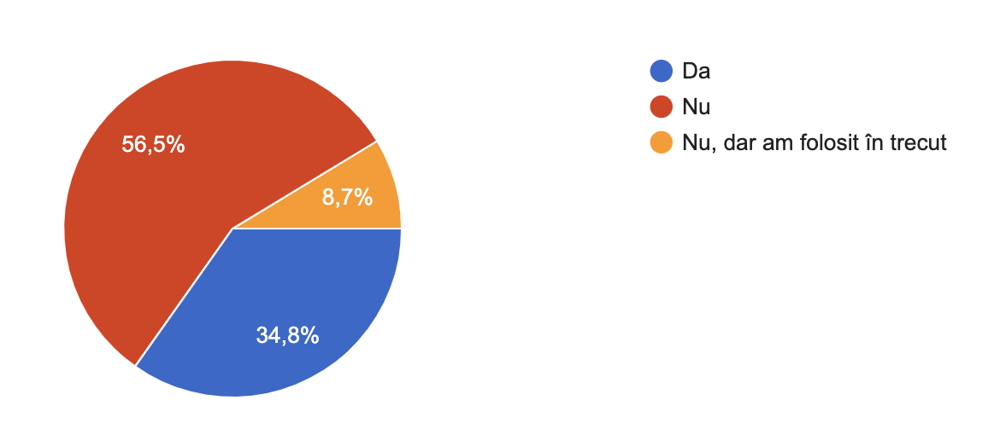

M1: Descrierea proiectului
Cerințe
↗
Alegerea ideii • 17 Oct 2024
Eu (Albert) și Alex ne-am întâlnit la în pauza de
masă la Romană și am trecut vreo oră prin zeci de
idei. Prima idee cu care venise Alex e și cea pe
care o dezvoltăm acum, dar n-am vrut s-o acceptăm
din prima. Probabil nu-i genială, ne-am lămurit că
nu-i nici unică, dar timpul a fost scurt, celelalte
idei mai puțin strălucitoare, așa că am rămas cu ea
și, mai presus de toate, e o problemă cu care noi
ne-am confruntat și ne place provocarea ce-o impune.
De ce acest nume? Sync - de la sincronizare, Pay -
de la plăți. Simplu: îți sincronizăm plățile.
Totuși, ne-am gândit că are și o sonoritate bună.
Problema identificată
Există tot mai multe entități care oferă servicii
bancare, în prezent majoritatea oamenilor deținînd
mai multe conturi, respectiv carduri, la entități
financiare diferite (Revolut, ING, BCR, BT etc.).
Fiecare entitate oferă o aplicație proprie pentru
vizualizarea tranzacțiilor și deferitor statistici
asociate conturilor deschise strict la acea bancă.
Există aplicații precum Apple Wallet sau Google
Wallet care integrează mai multe carduri și permit
vizualizarea plăților efectuate. Acestea nu
concatenează tranzacțiile făcute într-un istoric
comun, ci le păstrează în continuare ca plăți
separate, nu oferă și date cu privire la venituri
și, bineînțeles, nu au componenta de realizare a
bugetului personal.
Pe de altă parte, există aplicațiile de gestionare a
finanțelor personale (de creare și urmărire a
bugetului), însă adesea aceastea se bazează pe
consecvența utilizatorului în introducerea manuală a
tranzacților.
Problema identificată de noi (și ca urmare a
experienței personale, nu doar a analizei de piață)
este existența a prea puține aplicații de management
al finanțelor proprii care să permită urmărirea
tuturor tranzacțiilor indiferent de cardul folosit,
categorisirea automată a plăților și analiza sumelor
pentru oferirea de statistici complete asupra
capitalului personal.
Soluția propusă
SyncPay - o aplicație de gestioanare a bugetului
personal care, indiferent cu ce plătești sau unde
îți vin banii, vei putea vziualiza și compara datele
pe o singură paltformă.
Soluția software presupune integrarea mai multor
entități bancare în platformă, creându-se astfel un
istoric comun al tranzacțiilor, posibilitatea de
categorisire automată și păstrarea unei acurateți
ridicate în analiza bugetului.
Aplicații similare
-
Wallet
are peste 6.5 milioane de utilizatori la nivel
global, declarând că este prezentă în peste 160
de țări și tradusă în 20+ limbi, inclusiv
româna. Dezvoltată de BudgetBakers (Cehia),
aplicația "Wallet" sincronizează peste 15.000 de
bănci și oferă o monitorizare automată a
tranzacțiilor.
-
MiM
este dedicată utilizatorilor din România. Iancu
Guda este un profesor care dezvoltă voluntar
aplicație dorind să contribuie prin acest
proiect la educația financiară încă precară a
românilor. Aplicația necesită introducerea
manuală a tranzacțiilor și este ideală pentru
urmărirea simplă a cheltuielilor, dar inteția
declarată în descrierea aplicației este de a
avea într-un viitor apropiat introducerea
speech-to-text a tranzacțiilor și, ulterior,
posibilitatea de integrare a cardurilor.
Segmente de utilizatori
Restrângerea la un grup țintă al aplicației este
foarte dificilă deoarece toți oamenii folosesc bani,
iar majoritatea dețin cel puțin un cont bancar.
Astfel, ne adresăm unei audiențe globale, dar există
câteva delimitări importante. De exemplu, segmentul
de utilizatori cu vârsta mai mare de 50 de ani are,
în general, o educație financiară și digitală mai
redusă, ceea ce ne face să ne concentrăm pe cei sub
50 de ani, fără a exclude complet persoanele mai în
vârstă care s-au adaptat totuți, măcar minimal, la
era digitală.
Totodată, este relevantă limita legală minimă pentru
deținerea unui cont bancar și a unui card, deși
aceasta nu este strict impusă în definirea grupului
țintă. Este necesară, de asemenea, o segmentare pe
niveluri de educație financiară, întrucât
utilizatorii au cunoștințe variate despre
gestionarea banilor și utilizarea instrumentelor
financiare.
În România, doar aproximativ 30% din populație
efectuează plăți predominant cu cardul, ceea ce
restrânge și mai mult audiența țintă pentru acest
tip de aplicație
↗.
-
Adolescenți (14-18 ani):
Folosesc cardurile de tineret oferite de bănci
pentru cumpărături mici și plăți online. Adesea
au cunoștințe financiare limitate, fiind ghidați
de părinți.
-
Tineri adulți (18-25 ani):
Încep să gestioneze singuri un buget, primesc
salarii sau alocații de studiu. Sunt
familiarizați cu aplicațiile financiare și
apreciază integrarea ușoară a tranzacțiilor.
-
Adulți activi profesional (25-40
ani):
Au venituri stabile, conturi multiple și
folosesc cardurile atât pentru plăți fizice, cât
și pentru tranzacții online. Au un interes
crescut pentru gestionarea bugetului și
economisire.
-
Adulți cu responsabilități familiale (30-50
ani):
Se concentrează pe economii și bugete pentru
familie. Au cunoștințe financiare mai avansate
și adesea caută instrumente de monitorizare a
cheltuielilor familiei.
-
Seniori digitalizați (50+ ani):
Deși nu reprezintă o mare parte din utilizatori,
acești seniori sunt familiarizați cu tehnologia
digitală și folosesc carduri pentru tranzacții
zilnice. Au nevoie de o interfață intuitivă și
simplă.
Metrici ale succesului
Acești indicatori sunt esențiali pentru a înțelege
succesul aplicației SyncPay, organizându-i în trei
categorii principale:
-
Implicarea utilizatorilor
-
Numărul de utilizatori
activi:
Numărul de persoane care utilizează
aplicația zilnic, săptămânal sau lunar.
-
Rata de retenție:
Procentul utilizatorilor care continuă
să utilizeze aplicația după o anumită
perioadă (ex. 1 lună, 3 luni).
-
Rata de abandon (Churn
Rate):
Procentul de utilizatori care renunță la
aplicație după o anumită perioadă.
-
Profitabilitatea
-
Monthly Recurring Revenue
(MRR):
Totalul veniturilor recurente generate
de abonamentele lunare.
-
Customer Acquisition Cost
(CAC):
Costul mediu pentru a atrage un nou
utilizator prin marketing și
publicitate.
-
Lifetime Value (LTV):
Valoarea totală generată de un
utilizator pe toată durata utilizării
aplicației.
-
Satisfacția utilizatorilor:
recenziile și rating-urile în App Store și
Google Play, care reflectă satisfacția generală
a utilizatorilor.
Costul dezvoltării
Suntem studenți, deci vrem costuri cât mai reduse.
De dezvoltare n-are rost să amintesc... dar pentru
publicarea aplicației sunt câteva costuri esențiale.
Iată cum arată estimările naostre:
-
Domeniu: Domeniul personalizat
costă aproximativ 10-30 USD pe an, o cheltuială
necesară pentru branding.
-
Hosting: Alegem un plan VPS
accesibil, la 5-15 USD pe lună (DigitalOcean sau
Vultr), potrivit pentru faza de MVP.
-
SSL: Vom folosi certificate SSL
gratuite de la Let’s Encrypt cel mai probabil.
-
Publicare pe platforme: Google
Play necesită o taxă unică de 25 USD, iar App
Store o taxă anuală de ~100 USD, adică un total
de 125 USD în primă fază.
-
API-uri externe: Dacă folosim
API-uri pentru integrare cu bănci, costul
estimat va fi de 100-200 USD pe lună. Dar
probabil că odată ce vom aprofunda partea aceast
din punct de vedere tehnic, vom avea un cost
estimat mai apropiat de realitate.
Astfel, costurile totale pentru publicare sunt
estimate între 200 și 500 USD.
Totuți, vor exista și costuri de publicitate (sume
investite în marketing, dar aceastea ar putea fi
reduse prin folosirea talentelor prietenilor). În
rest, noi ne aducem aportul voluntar la dezvoltare
:)
Posibile venituri
Strategia de monetizare pentru SyncPay rămâne în
discuție, având în vedere obiectivul nostru de a
oferi utilizatorilor o experiență financiară
accesibilă. Iată câteva opțiuni pe care le analizăm:
-
Contribuții de la utilizatori prin
abonamente:
Una dintre metodele de venituri ar putea fi un
abonament lunar. Această opțiune s-ar putea
desfășura sub forma unei taxe fixe, însă
explorăm și varianta unei taxe ajustabile,
bazată pe veniturile utilizatorilor. De exemplu,
utilizatorii ar putea plăti un procent din
veniturile lor, cu praguri diferite pentru
diverse categorii de venit: de la un procent mai
mare pentru venituri reduse (de ex. 3% pentru
până la 500 de lei) la unul semnificativ mai mic
pentru venituri ridicate (de ex. 0,5% pentru
peste 3000 de lei). Astfel, fiecare contribuie
proporțional cu posibilitățile sale financiare,
păstrând o echitate rezonabilă.
-
Plată unică „lifetime”: Deși nu
este opțiunea noastră principală, analizăm și
posibilitatea unei taxe unice pe viață. Această
opțiune oferă acces complet la aplicație fără
costuri recurente, dar necesită o decizie atentă
pentru a asigura sustenabilitatea pe termen
lung.
-
Model freemium: Deși nu suntem
mari fani ai acestui model, am observat succesul
multor aplicații care oferă funcționalități de
bază gratuite, rezervând caracteristicile
avansate pentru utilizatorii premium. Rămânem
însă precauți față de această abordare, deoarece
dorim să evităm experiențele frustrante pe care
le-am avut noi înșine cu aplicații freemium.
-
Reclame relevante: O sursă
alternativă de venit ar putea fi reclamele
sponsorizate, dar ne-am angajat să păstrăm
calitatea experienței pentru utilizator. Astfel,
ne orientăm către reclame relevante și utile,
cum ar fi cursuri de educație financiară sau
oferte de credite de la instituții bancare,
servicii avansate gratuite (de exemplu, sfaturi
de la AI-chatbots financiari sau analiști
umani).
Căutăm variante de monetizare echitabile și
accesibile pentru toate segmentele de utilizatori,
de la adolescenți la afaceriști cu venituri
ridicate.
M2: Validarea ideii
Scopul interviurilor
Obiectivul principal a fost să evaluăm
ideea aplicației noastre de management
financiar
și să înțelegem dacă aceasta abordează cu succes
nevoile utilizatorilor în ceea ce
privește bugetarea și economisirea. Prin interviuri
structurate și aplicând
principiile Mom Test, am încercat
să obținem feedback sincer și să
identificăm provocările și dorințele acestora.
Metodologie
Am organizat interviuri cu un eșantion diversificat
de persoane, în funcție de vârstă și statut
financiar, pentru a obține o imagine de ansamblu
completă. Conform principiilor Mom Test, am pus
accent pe întrebări neutre și deschise, care au
încurajat participanții să își exprime opiniile în
mod autentic, evitând răspunsurile de complezență.
De asemenea am lanst și un scurt chestionar (google
forms) pentru a obține feedback minimal de la un
număr mai mare de persoane.
Rezultate și Observații
-
Majoritatea participanților și-au exprimat
interesul pentru o aplicație de
monitorizare a cheltuielilor
care să îi ajute să își înțeleagă mai bine
obiceiurile financiare.
-
Categoriile mai tinere au raportat că întâmpină
mai multe dificultăți în gestionarea
finanțelor, având tendința de a cheltui fără un plan
clar.
-
Participanții mai în vârstă au demonstrat o
abilitate mai mare de a economisi
și au fost mai sceptici față de aplicațiile de
bugetare, considerând că își controlează bine
cheltuielile.
-
Cei mai mulți participanți au subliniat
importanța unei
interfețe intuitive și a unui sistem de
notificări
pentru a fi constant informați despre
cheltuielile lor.
Rezultate ale sondajului
Am realizat un sondaj pentru a înțelege mai bine
obiceiurile utilizatorilor privind gestionarea
finanțelor și preferințele lor. Iată câteva
dintre rezultatele relevante:
În ce categorie de vârstă te
încadrezi?
Majoritatea respondenților (73.9%) se
încadrează în categoria de vârstă 18-25 de
ani, sugerând că aplicația noastră va trebui
să se concentreze pe nevoile acestei
categorii, urmată de 13% în segmentul 46-55
de ani.

Folosești în prezent aplicații de
gestionare a finanțelor / bugetului
personal?
Aproximativ 56.5% dintre respondenți nu
utilizează în prezent astfel de aplicații,
în timp ce 34.8% le folosesc. Acest lucru
subliniază un potențial mare de utilizatori
care ar putea fi atrași de aplicația
noastră.
Ce aplicație ai folosit cel mai recent
/ folosești pentru gestionarea
finanțelor / bugetului personal?
Respondenții au menționat aplicații variate,
precum Revolut, George BCR, Money Manager,
și Google Pay, indicând o gamă largă de
preferințe în utilizarea aplicațiilor
financiare și nevoia unei soluții integrate.
Cât de mulțumit ești de aplicația
folosită cel mai recent în ceea ce
privește urmărirea tuturor conturilor
tale financiare?
Aproximativ 50% dintre utilizatori au
acordat aplicației o notă de 5, indicând un
nivel ridicat de satisfacție. Totuși, există
spațiu pentru îmbunătățiri, deoarece 40% au
oferit nota 4, iar 10% au oferit nota 3.
Concluzii Generale
-
Simplificarea Procesului de
Bugetare:
Mulți utilizatori menționează că monitorizarea
bugetului și a cheltuielilor ia prea mult timp.
O aplicație care automatizează acest proces și
oferă o imagine clară a bugetului săptămânal sau
lunar ar putea reduce efortul și ar încuraja
folosirea continuă.
-
Acces la Informații Financiare În Timp
Real:
Un alt aspect remarcat a fost lipsa de
conștientizare a cheltuielilor în timp real. O
funcție care arată clar cheltuielile cumulate în
comparație cu bugetul prestabilit ar putea ajuta
utilizatorii să rămână în limitele bugetului.
-
Abordarea Educației Financiare pentru
Tineri:
Unii intervievați tineri sunt conștienți de
problemele financiare, dar nu acționează pentru
a le rezolva. Aceștia ar putea beneficia de o
soluție care îi educă și îi ghidează în
gestionarea bugetului.
-
Segmentarea Utilizatorilor după Interesul
în Gestionarea Banilor:
Persoanele care consideră că problema lor
financiară este venitul scăzut și nu gestionarea
banilor vor fi mai puțin interesate de o
aplicație de bugetare. Acest lucru sugerează că
aplicația ar trebui orientată către utilizatorii
cu interes activ în optimizarea cheltuielilor.
În urma interviurilor, se poate observa că
tinerii au dificultăți mai mari în
bugetare
și economisire, în comparație cu persoanele din
categoriile de vârstă mai mare. Aceasta indică o
posibilă piață țintă pentru
aplicația noastră, cu accent pe nevoile și
obiceiurile financiare ale tinerilor. Următorii pași
ar putea include dezvoltarea unui prototip care să
răspundă direct acestor nevoi, validând în
continuare funcționalitățile propuse.